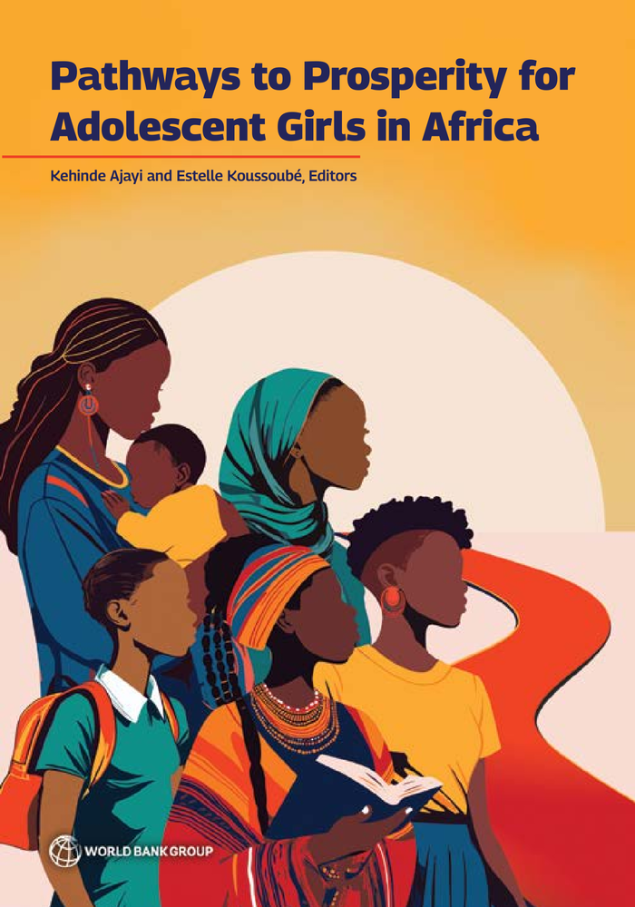

Africa stands at a crossroads, with its future prosperity hinging on the policy and investment decisions it makes today. The continent has an opportunity to shape the trajectories of generations to come by investing in the success of a pivotal population: its adolescent girls. With over 145 million adolescent girls calling Africa home, the potential for transformative change is immense. Yet challenges persist: from high rates of child marriage to limited educational opportunities. Over half of African girls ages 15 to 19 are out of school or married or have children. How can African countries overcome these challenges to ensure that adolescent girls enter adulthood empowered to thrive? Pathways to Prosperity for Adolescent Girls in Africa offers a groundbreaking roadmap for change. This landmark report outlines concrete, actionable policy recommendations; provides a comprehensive review of evidence-based interventions; presents a data-driven categorization of African countries to guide investments in adolescent girls; and introduces an innovative framework for understanding and measuring adolescent girls’ empowerment. Drawing on extensive research and consultations with adolescent girls, policymakers, and practitioners, the report reveals that investing in adolescent girls can yield a tenfold return in economic impact. It outlines six key areas for targeted action: building human capital, enhancing economic success, focusing on the most vulnerable girls, adopting a holistic approach, addressing data and evidence gaps, and mobilizing diverse stakeholders.